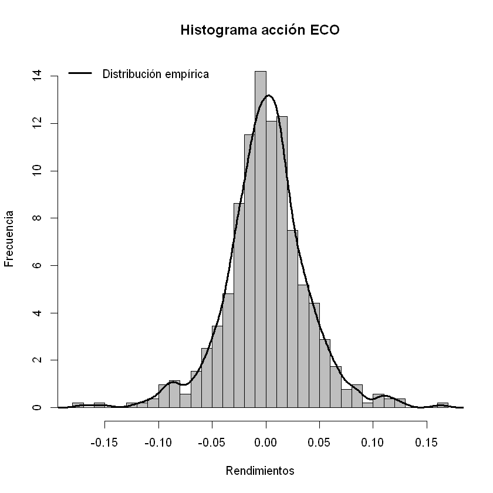
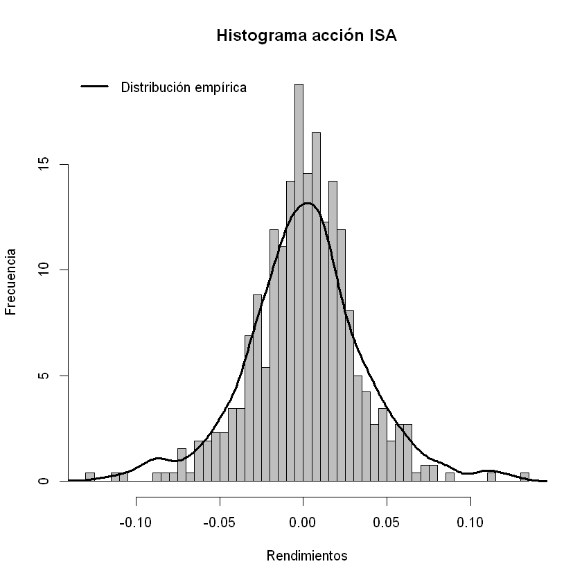
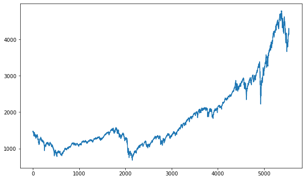
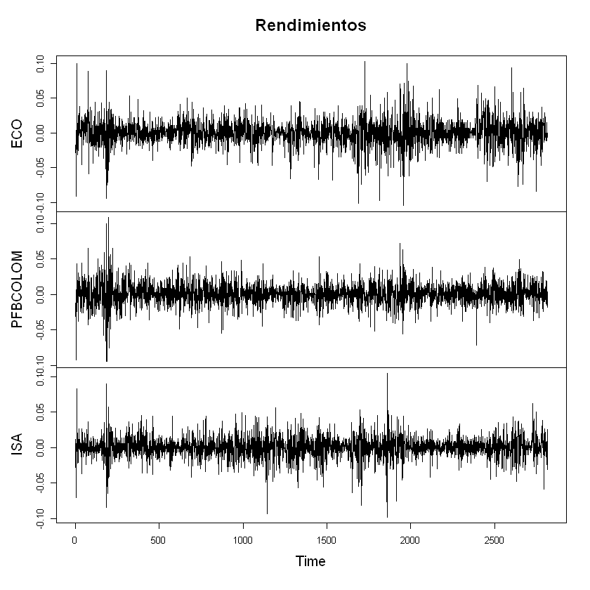
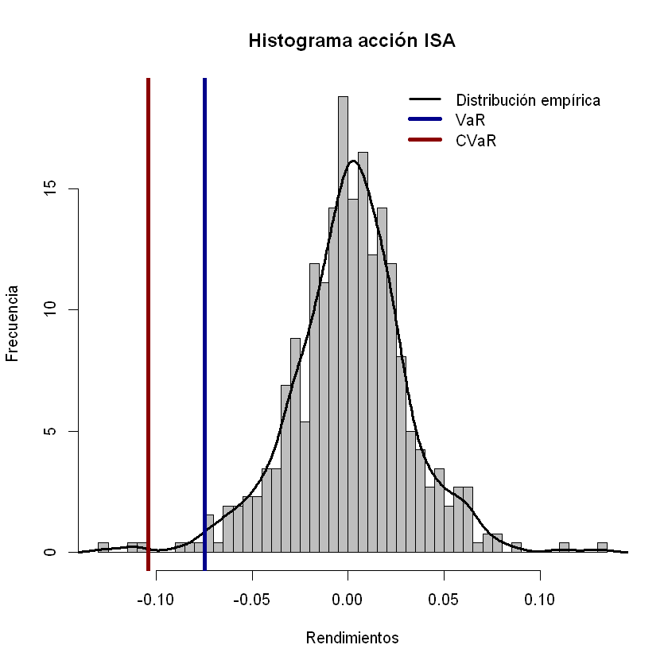
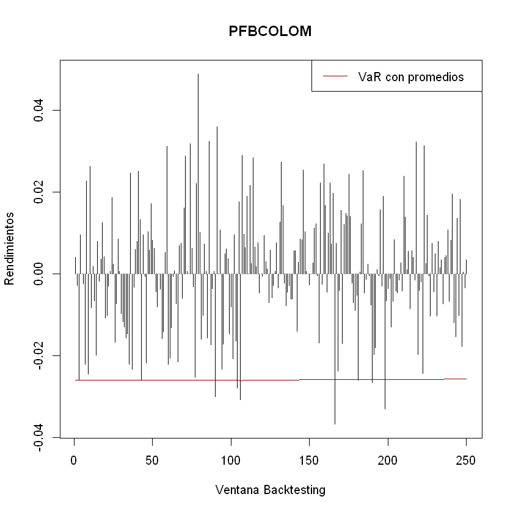
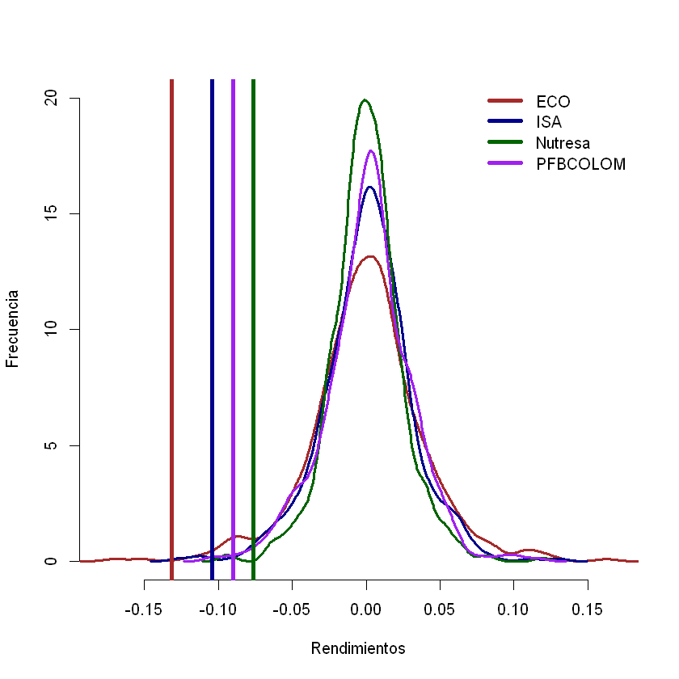
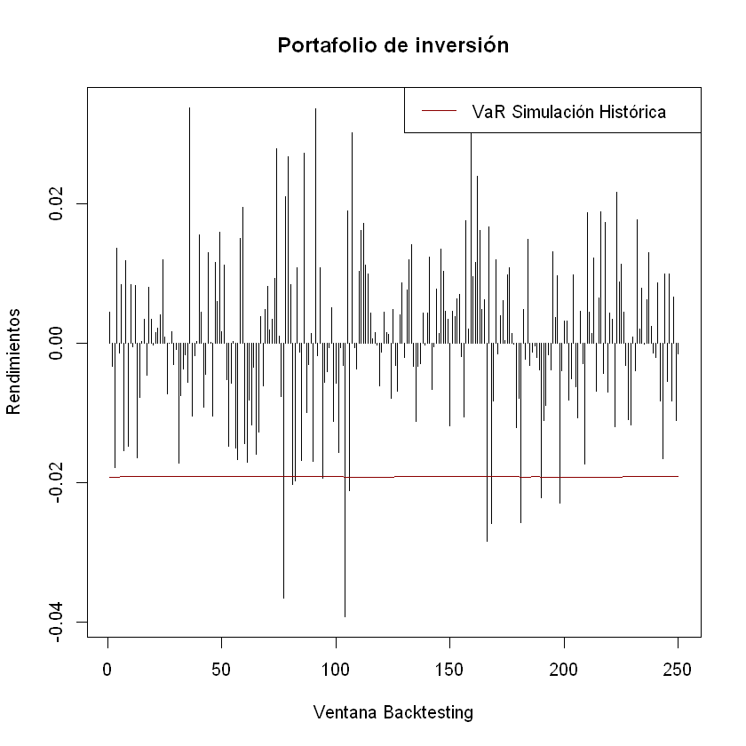
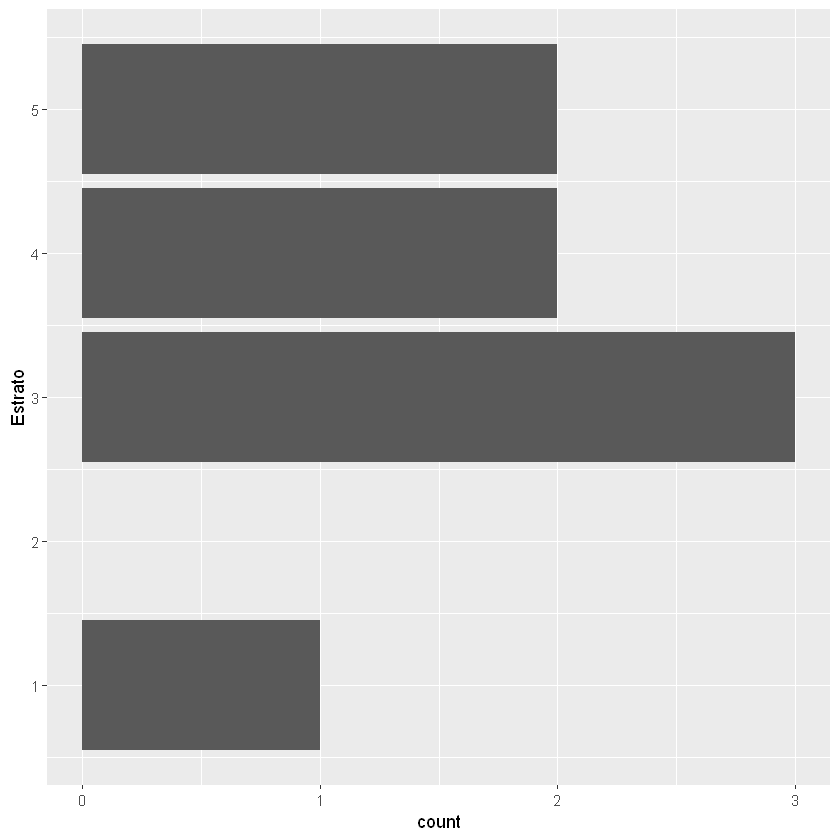

Análisis gráfico VaR y CVaR¶
datos=read.csv("Datos primer examen 01-2020.csv",sep = ";")
precios=datos[,-1]
rendimientos=matrix(,nrow(precios)-1,ncol(precios))
for(i in 1:ncol(precios)){
rendimientos[,i]=diff(log(precios[,i]))
}
Histograma y distribución empírica de ECO¶
hist(rendimientos[,1],breaks = 40,col = "gray",xlab = "Rendimientos",ylab = "Frecuencia",main = "Histograma acción ECO",freq =F)
lines(density(rendimientos[,1]),lwd=3)
legend(x="topleft","Distribución empírica",col="Black",lwd=3,bty="n")
{kind=link}

Histograma y distribución empírica de ISA¶
hist(rendimientos[,2],breaks = 40,col = "gray",xlab = "Rendimientos",ylab = "Frecuencia",main = "Histograma acción ISA",freq =F)
lines(density(rendimientos[,1]),lwd=3)
legend(x="topleft","Distribución empírica",col="Black",lwd=3,bty="n")
{kind=link}

Histograma y distribución empírica de Nutresa¶
hist(rendimientos[,3],breaks = 40,col = "gray",xlab = "Rendimientos",ylab = "Frecuencia",main = "Histograma acción Nutresa",freq =F)
lines(density(rendimientos[,3]),lwd=3)
legend(x="topleft","Distribución empírica",col="Black",lwd=3,bty="n")
{kind=link}

Histograma y distribución empírica de PFBCOLOM¶
hist(rendimientos[,4],breaks = 40,col = "gray",xlab = "Rendimientos",ylab = "Frecuencia",main = "Histograma acción PFBCOLOM",freq =F)
lines(density(rendimientos[,4]),lwd=3)
legend(x="topleft","Distribución empírica",col="Black",lwd=3,bty="n")
{kind=link}

proporciones=c(0.25,0.25,0.25,0.25)
NC=0.99
VaR_individuales_SH_percentil=vector()
for(i in 1:ncol(rendimientos)){
VaR_individuales_SH_percentil[i]=abs(quantile(rendimientos[,i],1-NC))
}
VaR_individuales_SH_percentil
- 0.100017529037464
- 0.0747062638979077
- 0.0623792449456534
- 0.0746798926612424
CVaR=vector()
for(i in 1:ncol(rendimientos)){
CVaR[i]=abs(mean(tail(sort(rendimientos[,i],decreasing = T),floor(nrow(rendimientos)*(1-NC)))))
}
CVaR
- 0.131734096471733
- 0.104054311101083
- 0.0763919471659559
- 0.0898571003585143
rendimientos_portafolio=vector()
for(i in 1:nrow(rendimientos)){
rendimientos_portafolio[i]=sum(rendimientos[i,]*proporciones)
}
VaR_portafolio_SH_percentil=abs(quantile(rendimientos_portafolio,1-NC))
VaR_portafolio_SH_percentil
CVaR_portafolio=abs(mean(tail(sort(rendimientos_portafolio,decreasing = T),floor(nrow(rendimientos)*(1-NC)))))
CVaR_portafolio
Histograma, distribución empírica de VaR y CVaR de ECO¶
hist(rendimientos[,1],breaks = 40,col = "gray",xlab = "Rendimientos",ylab = "Frecuencia",main = "Histograma acción ECO",freq =F)
lines(density(rendimientos[,1]),lwd=3)
abline(v=-VaR_individuales_SH_percentil[1],col="darkblue",lwd=4)
abline(v=-CVaR[1],col="darkred",lwd=4)
legend(x="topright",c("Distribución empírica","VaR","CVaR"),col=c("Black","darkblue","darkred"),lwd=c(3,4,4),bty="n")

Histograma, distribución empírica de VaR y CVaR de ISA¶
hist(rendimientos[,2],breaks = 40,col = "gray",xlab = "Rendimientos",ylab = "Frecuencia",main = "Histograma acción ISA",freq =F)
lines(density(rendimientos[,2]),lwd=3)
abline(v=-VaR_individuales_SH_percentil[2],col="darkblue",lwd=4)
abline(v=-CVaR[2],col="darkred",lwd=4)
legend(x="topright",c("Distribución empírica","VaR","CVaR"),col=c("Black","darkblue","darkred"),lwd=c(3,4,4),bty="n")
{kind=link}

Histograma, distribución empírica de VaR y CVaR de Nutresa¶
hist(rendimientos[,3],breaks = 40,col = "gray",xlab = "Rendimientos",ylab = "Frecuencia",main = "Histograma acción Nutresa",freq =F)
lines(density(rendimientos[,3]),lwd=3)
abline(v=-VaR_individuales_SH_percentil[3],col="darkblue",lwd=4)
abline(v=-CVaR[3],col="darkred",lwd=4)
legend(x="topright",c("Distribución empírica","VaR","CVaR"),col=c("Black","darkblue","darkred"),lwd=c(3,4,4),bty="n")

Histograma, distribución empírica de VaR y CVaR de PFBCOLOM¶
hist(rendimientos[,4],breaks = 40,col = "gray",xlab = "Rendimientos",ylab = "Frecuencia",main = "Histograma acción PFBCOLOM",freq =F)
lines(density(rendimientos[,4]),lwd=3)
abline(v=-VaR_individuales_SH_percentil[4],col="darkblue",lwd=4)
abline(v=-CVaR[4],col="darkred",lwd=4)
legend(x="topright",c("Distribución empírica","VaR","CVaR"),col=c("Black","darkblue","darkred"),lwd=c(3,4,4),bty="n")

Distribuciones empíricas y VaR de las cuatro acciones¶
hist(rendimientos[,1],breaks = 40,col = "white",border = "white",xlab = "Rendimientos",ylab = "Frecuencia",main = "",freq =F,ylim=c(0,20))
lines(density(rendimientos[,1]),lwd=3,col="brown")
lines(density(rendimientos[,2]),lwd=3,col="darkblue")
lines(density(rendimientos[,3]),lwd=3,col="darkgreen")
lines(density(rendimientos[,4]),lwd=3,col="purple")
abline(v=-VaR_individuales_SH_percentil[1],col="brown",lwd=4)
abline(v=-VaR_individuales_SH_percentil[2],col="darkblue",lwd=4)
abline(v=-VaR_individuales_SH_percentil[3],col="darkgreen",lwd=4)
abline(v=-VaR_individuales_SH_percentil[4],col="purple",lwd=4)
legend(x="topright",c("ECO","ISA","Nutresa","PFBCOLOM"),col=c("brown","darkblue","darkgreen","purple"),lwd=c(4,4,4,4),bty="n")
{kind=link}

Distribuciones empíricas y CVaR de las cuatro acciones¶
hist(rendimientos[,1],breaks = 40,col = "white",border = "white",xlab = "Rendimientos",ylab = "Frecuencia",main = "",freq =F,ylim=c(0,20))
lines(density(rendimientos[,1]),lwd=3,col="brown")
lines(density(rendimientos[,2]),lwd=3,col="darkblue")
lines(density(rendimientos[,3]),lwd=3,col="darkgreen")
lines(density(rendimientos[,4]),lwd=3,col="purple")
abline(v=-CVaR[1],col="brown",lwd=4)
abline(v=-CVaR[2],col="darkblue",lwd=4)
abline(v=-CVaR[3],col="darkgreen",lwd=4)
abline(v=-CVaR[4],col="purple",lwd=4)
legend(x="topright",c("ECO","ISA","Nutresa","PFBCOLOM"),col=c("brown","darkblue","darkgreen","purple"),lwd=c(4,4,4,4),bty="n")
{kind=link}

Histograma, distribución empírica, VaR y CVaR del portafolio de inversión¶
hist(rendimientos_portafolio,breaks = 40,col = "gray",border = "white",xlab = "Rendimientos",ylab = "Frecuencia",main = "",freq =F)
lines(density(rendimientos_portafolio),lwd=3,col="black")
abline(v=-VaR_portafolio_SH_percentil,col="darkgreen",lwd=4)
abline(v=-CVaR_portafolio,col="darkred",lwd=4)
legend(x="topright",c("Distribución empírica","VaR","CVaR"),col=c("Black","darkgreen","darkred"),lwd=c(3,4,4),bty="n")
{kind=link}

Comparación VaR acciones con VaR portafolio de inversión¶
hist(rendimientos_portafolio,breaks = 40,col = "white",border = "white",xlab = "Rendimientos",ylab = "Frecuencia",main = "VaR",freq =F,xlim=c(-0.15,0.15))
lines(density(rendimientos[,1]),lwd=3,col="gray")
lines(density(rendimientos[,2]),lwd=3,col="gray")
lines(density(rendimientos[,3]),lwd=3,col="gray")
lines(density(rendimientos[,4]),lwd=3,col="gray")
lines(density(rendimientos_portafolio),lwd=4,col="black")
legend(x="topright",c("Acciones","Portafolio"),col=c("gray","black"),lwd=c(3,4),bty="n")
abline(v=-VaR_individuales_SH_percentil[1],col="gray",lwd=4)
abline(v=-VaR_individuales_SH_percentil[2],col="gray",lwd=4)
abline(v=-VaR_individuales_SH_percentil[3],col="gray",lwd=4)
abline(v=-VaR_individuales_SH_percentil[4],col="gray",lwd=4)
abline(v=-VaR_portafolio_SH_percentil,col="black",lwd=4)

Comparación CVaR acciones con CVaR portafolio de inversión¶
hist(rendimientos_portafolio,breaks = 40,col = "white",border = "white",xlab = "Rendimientos",ylab = "Frecuencia",main = "CVaR",freq =F,xlim=c(-0.15,0.15))
lines(density(rendimientos[,1]),lwd=3,col="gray")
lines(density(rendimientos[,2]),lwd=3,col="gray")
lines(density(rendimientos[,3]),lwd=3,col="gray")
lines(density(rendimientos[,4]),lwd=3,col="gray")
lines(density(rendimientos_portafolio),lwd=4,col="black")
legend(x="topright",c("Acciones","Portafolio"),col=c("gray","black"),lwd=c(3,4),bty="n")
abline(v=-CVaR[1],col="gray",lwd=4)
abline(v=-CVaR[2],col="gray",lwd=4)
abline(v=-CVaR[3],col="gray",lwd=4)
abline(v=-CVaR[4],col="gray",lwd=4)
abline(v=-CVaR_portafolio,col="black",lwd=4)
{kind=link}
